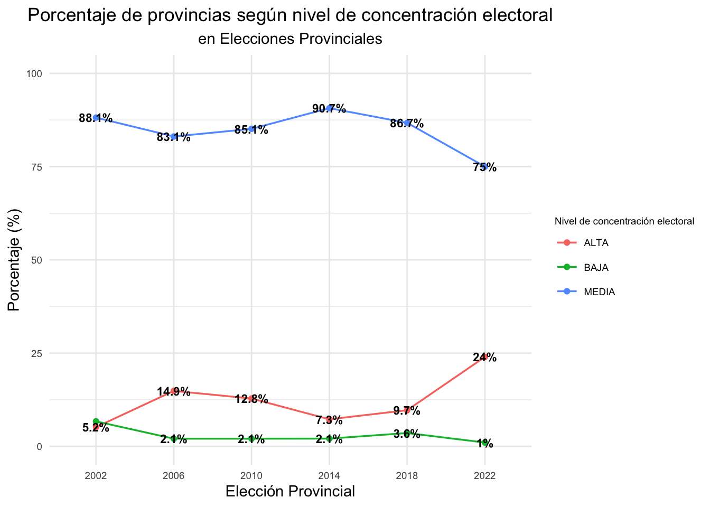
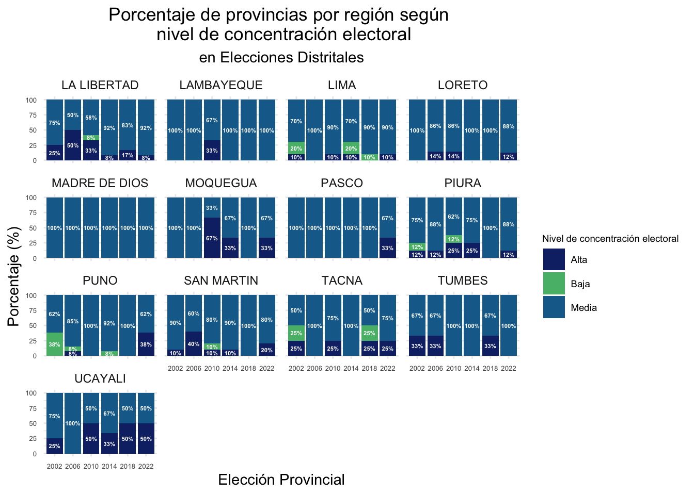
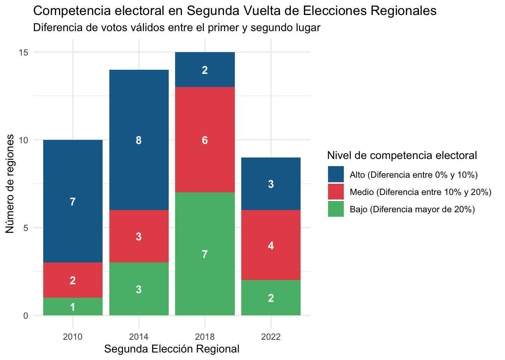
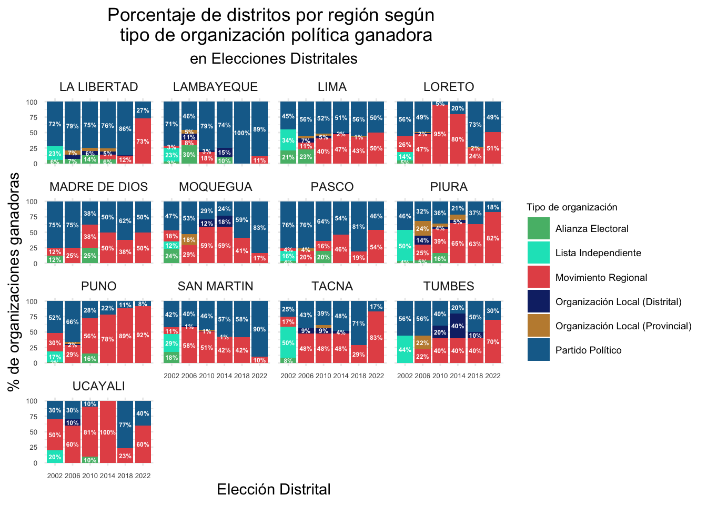

4 Organizaciones políticas candidatas:
El número de organizaciones políticas candidatas ha incremendado.
4.1 Elecciones Regionales
Número de org políticas en total
| Elección | Número de Org. Políticas |
|---|---|
| Regional 2002 | 65 |
| Regional 2006 | 100 |
| Regional 2010 | 180 |
| Regional 2014 | 174 |
| Regional 2018 | 113 |
| Regional 2022 | 98 |
Número de org políticas por tipo
| Elección | Partido Político | Movimiento Regional | Alianza Electoral | Total |
|---|---|---|---|---|
| Regional 2002 | 13 | 51 | 1 | 65 |
| Regional 2006 | 23 | 70 | 7 | 100 |
| Regional 2010 | 23 | 140 | 17 | 180 |
| Regional 2014 | 16 | 146 | 12 | 174 |
| Regional 2018 | 22 | 91 | 0 | 113 |
| Regional 2022 | 12 | 86 | 0 | 98 |

Número de org políticas por tipo y región


Para mapa
SEGUNDA VUELTA
Número de org políticas en total
| Elección | Número de Org. Políticas |
|---|---|
| Segunda Regional 2010 | 18 |
| Segunda Regional 2014 | 25 |
| Segunda Regional 2018 | 25 |
| Segunda Regional 2022 | 14 |
Número de org políticas por tipo
| Elección | Partido Político | Movimiento Regional | Alianza Electoral | Total |
|---|---|---|---|---|
| Segunda Regional 2010 | 4 | 12 | 2 | 18 |
| Segunda Regional 2014 | 4 | 21 | 0 | 25 |
| Segunda Regional 2018 | 6 | 19 | 0 | 25 |
| Segunda Regional 2022 | 2 | 12 | 0 | 14 |

4.2 Elecciones Provinciales
Número de org políticas en total
| Elección | Número de Org. Políticas |
|---|---|
| Provincial 2002 | 425 |
| Provincial 2006 | 246 |
| Provincial 2010 | 254 |
| Provincial 2014 | 239 |
| Provincial 2018 | 132 |
| Provincial 2022 | 125 |
Número de org políticas por tipo
| Elección | Partido Político | Movimiento Regional | Alianza Electoral | Organización Local Provincial | Lista Independiente | Total |
|---|---|---|---|---|---|---|
| Provincial 2002 | 15 | 54 | 2 | 0 | 354 | 425 |
| Provincial 2006 | 29 | 106 | 10 | 101 | 0 | 246 |
| Provincial 2010 | 23 | 171 | 18 | 42 | 0 | 254 |
| Provincial 2014 | 17 | 167 | 13 | 42 | 0 | 239 |
| Provincial 2018 | 22 | 107 | 0 | 3 | 0 | 132 |
| Provincial 2022 | 12 | 113 | 0 | 0 | 0 | 125 |
Numero de listas provinciales por tipo y region
Para mapa=Número de org políticas por tipo y provincia
4.3 Elecciones Distritales
Número de org políticas en total
| Elección | Número de Org. Políticas |
|---|---|
| Distrital 2002 | 1494 |
| Distrital 2006 | 544 |
| Distrital 2010 | 547 |
| Distrital 2014 | 396 |
| Distrital 2018 | 149 |
| Distrital 2022 | 118 |
Número de org políticas por tipo
| Elección | Partido Político | Movimiento Regional | Alianza Electoral | Organización Local Provincial | Organización Local Distrital | Lista Independiente | Total |
|---|---|---|---|---|---|---|---|
| Distrital 2002 | 15 | 54 | 2 | 0 | 0 | 1423 | 1494 |
| Distrital 2006 | 30 | 114 | 11 | 98 | 291 | 0 | 544 |
| Distrital 2010 | 24 | 192 | 18 | 35 | 278 | 0 | 547 |
| Distrital 2014 | 17 | 175 | 13 | 35 | 156 | 0 | 396 |
| Distrital 2018 | 22 | 106 | 0 | 3 | 18 | 0 | 149 |
| Distrital 2022 | 12 | 106 | 0 | 0 | 0 | 0 | 118 |
Numero de listas distritales por tipo y region